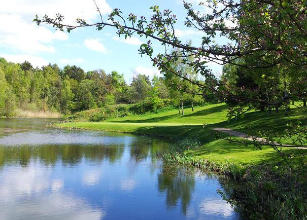
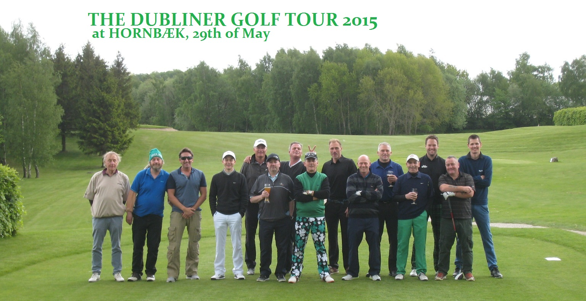
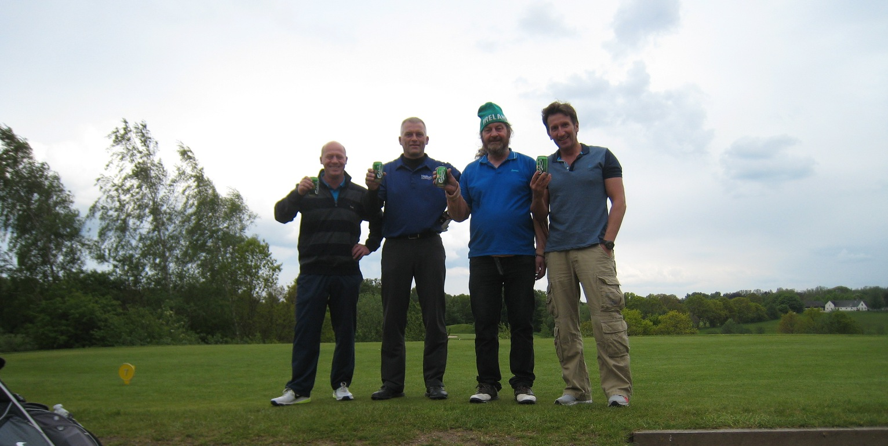
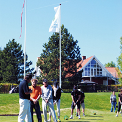
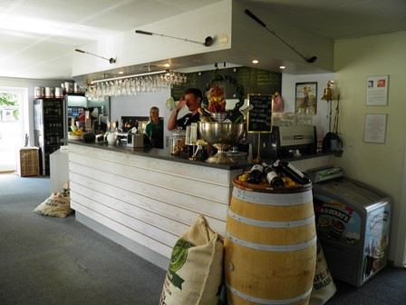
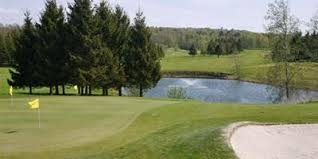

<div class="pages">
  <div data-page="guest" class="page navbar-fixed toolbar-fixed" >
    <div class="navbar">
      <div class="navbar-inner">
        <div class="left">
          <a href="#" class="link back icon-only"><i class="icon icon-back"></i></a>
          <!-- <a href="#" class="back link icon-only"><i class="icon icon-back"></i></a> -->
        </div>
        <div class="center">Gæster</div>
        <!-- <div class="right"></div> -->
        <div class="right">
        </div>
      </div>
    </div>
    <div class="page-content" style="padding-top:45px;">
       <div class="content-block">
          <p>Du er meget velkommen til at besøge og spille en runde golf på vores dejlige baner.</p>
          <p>For at illustrere kundetilfredshed, har vi valgt at offentliggøre uddrag af en mail, vi modtog fra en gruppe på 6 spillere der for nylig besøgte Hornbæk Golfklub:</p>
        </div>
        <div class="content-block">
          <center></center>
        </div>
        <div class="content-block" style="margin-bottom:0px;">
          <p><i>"Vil bare lige melde tilbage, at vi har haft en super dejlig tur med spil på Hornbæk og Gilleleje golfbane. Alt har klappet perfekt med banerne - vi var imponeret over, at scorekort og alt lå klar til os - og også overnatningen var fin og alt i orden. Alle vi mødte var meget imødekommende og venlige, det er dejligt. Tak for en rigtig god oplevelse, hvis vi havde lidt mere tid, så ville vi snart komme igen – men vi skal også varmt anbefale jer til andre."</i></p>
          <p>I 2011 fik banen en fantastisk anmeldelse af Teetime</p>
          <p>I sommeren 2015 har vi taget en ny Par 3-bane i brug: Lærkeager banen. Her kan du spille golf selv om du ikke er medlem i en golfklub og ikke har et registreret handicap. Når du har betalt greenfee kan du, ligesom de der spiller på vores 18-hullers bane, frit benytte vore træningsfaciliteter. Læs mere om Lærkeager banen <a href="#">HER</a></p>
          <p>Aktuel banestatus:</p>
          <p>For aktuel banestatus klik <a href="#">her</a></p>
          <p>Når greenfee er betalt, er rangebolde og træningsfaciliteter til frit brug hele dagen.</p>
          <p>På hjemmesiden kan du finde alle relevante informationer om banen, priser, lokale bestemmelser, specielle tilbud m.v.</p>
          <p>Kontakt <a href="sekretariatet.html">Sekretariatet</a> hvis du har spørgsmål.</p>
          <p>Med venlig hilsen - og hjertelig velkommen</p>
          <p>Hornbæk Golfklub</p>
        </div>
        <div class="content-block" style="margin-top:0px;">
          <center></center>
        </div>
        <div class="content-block-title">More</div>
        <div class="list-block accordion-list">
          <ul>
            <li class="accordion-item"><a href="#" class="item-link item-content">
                <div class="item-inner"> 
                  <div class="item-title">Aktuel banestatus</div>
                </div></a>
              <div class="accordion-item-content">
                <div class="content-block">
                  <p>Denne side bliver opdateret mindst én gang i døgnet.</p>
                  <center></center>
                  <p>Velkommen til og god fornøjelse med spillet.</p>
                  <p>Venlig hilsen<br />
                  Hornbæk Golfklub</p>
                  <center></center>
                </div>
              </div>
            </li>
            <li class="accordion-item"><a href="#" class="item-link item-content">
                <div class="item-inner"> 
                  <div class="item-title">Anbefalinger</div>
                </div></a>
              <div class="accordion-item-content">
                <div class="content-block">
                  <p><i>"Hej Susanne i Sekretariatet og Jan i Restauranten</i></p>
                  <p><i>På vegne af The Dubliner Golf Tour/Carlsberg gutterne:</i></p>
                  <p><i>Tusind tak for en super dag i Hornbæk Golfklub fredag d. 29. maj. Lækker golfbane og dejlig mad m/super service inde i restauranten. God skruet sammen af jer begge to.</i></p>
                  <p><i>Vi kommer snart tilbage og jeg personligt vil nu tale med jeres match udvalg, så jeg evt. kan komme forbi en dag som sponsor ved klubmatch eller lign. Jeg har vedhæftet nogle billeder fra Dubliner/Carlsberg dagen  -  I kan trygt lægge vores anbefalinger ud på jeres hjemmeside eller i jeres nyhedsmails til medlemmerne."</i></p>
                  <center></center><br />
                  <center></center><br />
                  <center></center><br />
                  <center></center>
                </div>
              </div>
            </li>
            <li class="accordion-item"><a href="#" class="item-link item-content">
                <div class="item-inner"> 
                  <div class="item-title">Hvem kan spille</div>
                </div></a>
              <div class="accordion-item-content">
                <div class="content-block">
                  <p>Hvilke gæster kan spille?</p>
                  <center></center>
                  <p>For at spille på vores 18-hullers Mesterskabsbane kræver vi, at du er i besiddelse af et Gyldigt DGU-kort (eller anden dokumentation) der viser, at du har et HCP på ikke over 48. I weekends og på helligdage dog ikke over 36.</p>
                  <p>Har du ikke et registreret HCP fra en dansk eller udenlandsk klub, kan vi tilbyde at du kan spille på Lærkeager banen. Det er en Par 3-bane som er placeret i forbindelse med klubben og som byder på 9 spændende og lærerige huller. Læs mere <a href="">HER</a></p>
                  <p>Spil i Weekends og på Helligdage<br />
                  Du kan booke tider på <a href="">GolfBox</a>, i Weekends og på Helligdage - dog ikke i tidsrummet mellem kl. 08:00 og 12:00 da disse tider er forbeholdt klubbens medlemmer. Hornbæk-medlemmer kan dog reservere tider til sig selv og deres gæst/gæster ved at kontakte <a href="sekretariatet.html">Sekretariatet</a>. Husk max 2 gæster pr. 4-bold.</p>
                  <p>- HCP-dokumentation skal forevises på forlangende og medbringes på banen.<br />
                  - Greenfee skal betales inden spillet påbegyndes. <br />
                  - Kvittering (Bag-Tag) for betalt greenfee, skal bæres synligt på din bag.<br />
                  - Du skal naturligvis overholde alle Lokale Regler, Ordensregler og Etikette.<br />
                  - Anvend kun soft spikes og medbring altid pitchfork. Almindelig anvendt golfbeklædning udbedes. <br />
                  - Max. 4 bolde pr. gruppe og hver spiller skal have sin egen bag. Det henstilles, at der ikke spilles greensome i travle perioder.<br />
                  - Hunde må gerne medtages på runden - i snor! Og husk pose til eventuelle efterladenskaber.<br />
                  </p>
                </div>
              </div>
            </li>
            <li class="accordion-item"><a href="#" class="item-link item-content">
                <div class="item-inner"> 
                  <div class="item-title">Firmaevent - gruppepakke</div>
                </div></a>
              <div class="accordion-item-content">
                <div class="content-block">
                  <p>Egner sig til et fyraftensarrangement, en uformel event med de gode kunder eller alle andre grupper af voksne: Grundejerforeningen, kortklubben, den private loge osv.</p>
                  <center></center>
                  <p>Få nogle hyggelige og sjove timer på golfbanen – og med et godt måltid mad bagefter. Det eneste krav er, at gruppen er på minimum 8 personer. Der kræves ingen golffærdigheder på forhånd – alle kan være med.</p>
                  <p>En anderledes måde at være sammen på, som I vil snakke om lang tid fremover. <a href="">Se hele arrangementet her!</a>
                  </p>
                  <p>KPakken indeholder:<br />
                  - Egen hyggelig og erfaren golfvært fra Hornbæk Golfklub, der kort introducerer jer til golfspillet og som står til rådighed, mens I spiller på banen<br />
                  - Lån af udstyr og golfbolde<br />
                  - To timers fri golf på den hyggelige Par 3 bane Lærkeager. Måske når I to runder?<br />
                  - Efter golfen kan I vælge imellem en lækkert hjemmelavet burger med pommes frites eller en flot pariserbøf. Dertil en stor øl, et glas vin eller en vand<br />
                  </p>
                  <p>Arrangementet tager skønsmæssigt 3 ½ time og kan arrangeres alle dage og på alle tidspunkter, hvis der er ledigt i perioden fra 1. april til 1. november. Pris pr. person er kr. 375, dog er minimum 8 personer. Arrangementet bestilles i sekretariatet på tlf. 49759570 senest 14 dage før, herunder også menuen.</p>
                  <p>Antallet af deltagere kan ændres indtil 2 dage før, dog ikke til under 8 betalende deltagere.</p>
                </div>
              </div>
            </li>
            <li class="accordion-item"><a href="#" class="item-link item-content">
                <div class="item-inner"> 
                  <div class="item-title">Kørevejledning</div>
                </div></a>
              <div class="accordion-item-content">
                <div class="content-block">
                  <p><b>Klubbens adresse er:</b><br />
                  Hornbæk Golfklub, Bøtterupvej 2C, 3100 Hornbæk - Telefon 49 75 95 70</p>
                   <center></center>
                  <p>I bil til Hornbæk Golfklub:<br /><br />
                  <b>Fra Hornbæk</b><br />
                  2½ km. før Tikøb på Hornbækvej drejes til højre i lyskryds mod Helsinge, efter ca. 1½ km kommer Bøtterupvej på højre hånd<br /><br />
                  <b>Fra Helsingør</b><br />
                  På Esrumvej passeres Horserødlejren og i lyskrydset Esrumvej/Hornbækvej fortsættes mod Helsinge ca. 1½ km, så kommer Bøtterupvej på højre hånd<br /><br />
                  <b>Fra København</b><br />
                  Kør ad Helsingørmotorvejen, tag Exit 4, derefter til venstre ad Hornbækvej mod Tikøb. Ca. 2½ km. efter Tikøb i lyskryds drejes til venstre mod Helsinge, ca. 1½ km. fremme på højre hånd kommer Bøtterupvej.<br /><br />
                  <b>Fra Helsinge</b><br />
                  Ca. 5 km. efter Esrum kommer Bøtterupvej på venstre hånd
                  </p>
                  <p>Med bus til og fra Hornbæk Golfklub:</p>
                  <p>Bus 340 fra Hornbæk eller Espergærde.</p>
                  <p>Hent information fra <a href="">movia's hjemmesider</a>. Bed chaufføren om at standse ved Hornbæk Golfklub på Bøtterupvej.</p>
                  <p>Eller find os på Googlemaps..... <a href="">Vis stort kort</a></p>
                </div>
              </div>
            </li>
            <li class="accordion-item"><a href="#" class="item-link item-content">
                <div class="item-inner"> 
                  <div class="item-title">Lærkeager - par 3 banen</div>
                </div></a>
              <div class="accordion-item-content">
                <div class="content-block">
                  <p>Hvordan kan jeg komme ud og spille:<br />
                  Hvis du som gæst ønsker du at spille en (eller flere) runder golf på Hornbæk Golfklubs par 3 bane - Lærkeager bane - kræver det ingen golfmæssige forudsætninger. Men du skal inden du starter din runde have betalt (greenfee) for at spille runden. Herefter skal du følge de opsatte ordensregler for spil på banen.</p>
                  <p>Greenfee:<br />
                  Du kan købe greenfee i Sekretariatet ved klubbens klubhus eller du kan trække det i den opsatte automat i Lærkereden (Klubhuset ved par 3 banen). I Shoppen har du mulighed for at købe eller leje golfudstyr, samt aftale træningslektioner med klubbens Proer. Shoppen har åben alle dage i sæsonen - man-tors 09:00-18:00, fre 09:00-17:00, lør, søn og helligdage 09:00-15:00.</p>
                  <p>Du kan til enhver tid framelde dig nyhedsbrevene via linket i bunden af mailen.</p>
                  <p>Når du har købt og betalt Greenfee har du samtidig ret til at benytte klubbens træningsfaciliteter: Drivingrange, Puttinggreen samt Indspilsgreen såvel før som efter du spiller på Lærkeager banen.
Din Greenfee gælder for spil hele dagen.</p>
                  <p>Priser:</p>
                  <center></center>
                  <p>Rabatter</p>
                  <p>Hvis en voksen gæst spiller i selskab med et aktivt medlem af Hornbæk Golfklub, ydes 50 kr. rabat. Se priser ovenfor. Op til 3 gæsterabatter pr. spiller i samme bold som et medlem. Denne rabat gælder ikke i forbindelse med andre rabatter eller ved deltagelse i arrangementer og turneringer på banen.</p>
                  <p>Tidsbestilling:</p>
                  <p>Der kan forudbestilles starttid på Lærkeager banen. Det kan du gøre online via Golfbox, ved at kontakte Sekratariatet eller på den opsatte terminal i Lærkereden. Det er også på denne terminal at du berkæfter dine tider.</p>
                  <center></center>
                  <p>Gruppebookninger:</p>
                  <p>Grupper af gæster og medlemmer på minimum 16 personer kan via sekretariatet booke tider på Lærkeager banen. Tiden bookes som en samlet blokering og der regnes med 10 minutter mellem starterne ved beregning af bookningens længde.</p>
                  <p>Ordningen kan benyttes sammen med de til enhver tid gældende rabatordninger. Alle klubbens øvrige regler for gæster og spil på banen skal overholdes.</p>
                  <center></center>
                </div>
              </div>
            </li>
            <li class="accordion-item"><a href="#" class="item-link item-content">
                <div class="item-inner"> 
                  <div class="item-title">Priser og rabetter</div>
                </div></a>
              <div class="accordion-item-content">
                <div class="content-block">
                  <p><a href="venskabsklubber.html">Venskabsklubber</a></p>
                  <p>Betalt greenfee til 18 hullers banen giver ret til:<br />
                  - fri brug af Driving range (inkl. bolde)<br />
                  - fri brug af Putting green - OBS: Kun brug af egne bolde<br />
                  - fri brug af indspilsgreen - OBS: Kun brug af egne bolde<br />
                  - 18 hullers spil på banen<br /></p>
                  <p><b>Elektronisk Greenfee-bog.</b>
                  <br />Hornbæk Golfklub har indført den elektroniske Greenfee-bog. Det betyder at du ikke behøver at skrive dig i en greenfee-bog men straks kan gå til Touch-screenen, logge dig ind med dit DGU-kort, betale din GreenFee og udskrive dit scorekort med tilhørende BagTag. Denne anbringer du tydeligt på din bag under hele dit ophold på og omkring banen som bevis på, at du har afregnet GreenFee</p>
                  <p><b>Priser 2016</b>
                  <br />De anførte priser er standardpriser. Der kan være rabatter at opnå. De fremgår ved booking i Golfbox.</p>
                  <center></center>
                  <p><b>Rabatter</b>
                  <br />Hvis en voksen gæst spiller i selskab med et aktivt medlem af Hornbæk Golfklub, ydes 100 kr. rabat. Denne rabat gælder ikke i forbindelse med andre rabatter. Se priser ovenfor. Max. tre gæster med rabat pr. medlem, weekend og helligdage mellem 8:00 og 11:50 kun en. Når du bekræfter din tid på GolfBox Touch-screenen i Sekretariatet, skal du som gæst blot rette greenfee-beløbet ned med kr. 100,- og notere 'Gæst til medlem nr. 67-xxxx" som årsag til ændret pris. Der gives ikke rabat på vinter greenfee.</p>
                  <p><b>Gruppebookninger</b>
                  <br />Gruppebookinger på min. 12 personer og max. 50 personer betaler 300 kr. i greenfee alle ugens dage. Ved gruppebookinger kan andre rabatordninger (Venskabsklub, Golfhäftet m.v.) ikke anvendes.</p>
                  <p><b>*)Juniorer</b>
                  <br />Hornbæk Golfklub er med i begge Junior-ordninger:<br />
                  - Gratis greenfee for juniorer - Alle juniorer med gyldigt DGU-kort fra klubber, der også er med i "Gratis greenfee for juniorer", spiller gratis.<br />
                  - 1 betalende voksen + max. 3 juniorer gratis - Alle juniorer med gyldigt DGU-kort fra klubber, der også er med i ordningen  "1 betalende voksen + max. 3 juniorer  gratis" , spiller gratis, hvis de er medlem i en klub, som deltager i DGU's ordning for juniorer. Hvilke klubber der deltager i ordningerne, kan du se her<br /></p>
                  <p><b>Greenfee vouchers</b>
                  <br />En af Hornbæk Golfklub udstedt greenfee voucher kan anvendes som betaling på alle dage, ligesom klubben accepterer frikort udstedt af de nordiske golf unioner, Dansk Greenkeeper forening, GAF og professionelle spilleres organisationer.</p>
                  <p>Ønsker du at anvende voucher eller frikort ved spil på banen, skal du, når du bekræfter din tid på GolfBox Touch-screenen i Sekretariatet, rette den opgivne pris til 0,00 kr. og angive årsagen til ændringen (Frikort Nr. XXXXX, Voucher Nr. XXXXXX).</p>
                  <p><b>Golfhäftet</b>
                  <br />Golfhæftet kan ikke anvendes i forbindelse med betaling af Greenfee i Hornbæk Golfklub</p>
                  <p><b>Betaling</b>
                  <br />Ved betaling af GreenFee kan du anvende Dankort, Visa-kort, Master Card, JCB-card og Eurocard. Når du har afsluttet betaling med dit kreditkort, kan du få printet en kvittering.</p>
                  <p>Hvis du betaler med kontanter skal du udfylde en 'Kontant-kuvert', lægge den kontante betaling i den nummererede kuvert og efterfølgende lægge kuverten i GreenFee brevindkastet. Husk at referere til kuvertens nummer når du på Touch-screenen markerer, at du betaler kontant.</p>
                  <p>Hvis du betaler med voucher skal du skrive navn, medlemsnummer og dato på voucheren og efterfølgende lægge den i Greenfee brevindkastet.</p>
                </div>
              </div>
            </li>
            <li class="accordion-item"><a href="#" class="item-link item-content">
                <div class="item-inner"> 
                  <div class="item-title">Restaurant</div>
                </div></a>
              <div class="accordion-item-content">
                <div class="content-block">
                  <p>Hjertelig velkommen i CaféInGOLF før og efter runden.</p>
                  <center></center>
                  <p>Her kan du nyde lidt mad, mens den ivrige debat om dagens bedste slag foregår.</p>
                  <p>Hvis du bestiller din mad inden du går ud - så er den klar når du kommer ind.</p>
                  <p>Restauranten er naturligvis også behjælpelig med særlige arrangementer, f.eks en storslået frokost efter runden, når chefen har inviteret til golf søndag formiddag eller ved sæsonafslutningen for din private klub-i-klubben.</p>
                  <p>Kontakt restauranten på tlf 3213 3313 eller 4017 9179.</p>
                  <p>CaféInGOLF's åbningstider:</p>
                  <center></center>
                  <p>Husk: For større selskaber er CaféInGOLF altid villige til at åbne restauranten før og efter de nævnte tider - hvis det aftales i forvejen. Send en mail til nissen@cafeingolf.dk . OBS: Køkkenet lukker 2 timer før ovennævnte lukketider.</p>
                  <p>NB: Hunde må ikke medtages i restauranten eller på terrassen.</p>
                  <center></center>
                </div>
              </div>
            </li>
            <li class="accordion-item"><a href="#" class="item-link item-content">
                <div class="item-inner"> 
                  <div class="item-title">Sekretariat</div>
                </div></a>
              <div class="accordion-item-content">
                <div class="content-block">
                  <p>Service til vore medlemmer<br />
                  Hvis du har behov for hjælp, har et spørgsmål vedrørende dit medlemsskab, banen, golfspillet, leje af bagskab o.s.v. kan du trygt henvende dig i sekretariatet.</p>
                  <center></center>
                  <p>Service til vore gæster<br />
                  Sekretariatet er behjælpelig med greenfee, salg af baneguide, information om vores faciliteter o.s.v. Det er også her, du skal betale greenfee både i og udenfor åbningstiderne.</p>
                  <p><Tilmelding til turneringer<br />
                  Tilmelding til klubbens turneringer sker på Info-standeren eller www.golfbox.dk.</p>
                  <p>Administration<br />
                  Herudover er sekretariatet ansvarlig for den daglige bogføring, kontakt til myndigheder og leverandører, opkrævning af kontingenter, betaling af regninger, lønudbetalinger o.s.v.</p>
                  <p>Glemte ting og sager<br />
                  Skulle du komme ud for at have tabt dine nøgler, glemt nogle beklædningsgenstande eller andet, kan du kontakte os i Sekretariatet. Har du glemt et jern eller en kølle under træning eller spil, skal du dog henvende dig i Shoppen.</p>
                  <p>Kontakt<br />
                  Send en mail på sekretariat@hornbaekgolf.dk, så hører du fra en af os.<br />
                  Du er også velkommen til at ringe til os på 4975 9570.</p>
                  <p><center>Medarbejderne i sekretariatet</center><br />
                  <center><br />
                  Hans Henrik Brandt<br />
                  Telefon: 6120 3637<br />
                  Mail: <a href="">hhb@hornbaekgolf.dk</a></center></p>
                  <p>
                  <center><br />
                  Heidi Fauth<br />
                  Telefon: 49 75 95 70<br />
                  Mail: <a href="">heidif@hornbaekgolf.dk</a></center></p>
                </div>
              </div>
            </li>
            <li class="accordion-item"><a href="#" class="item-link item-content">
                <div class="item-inner"> 
                  <div class="item-title">Regler for tidsbestilling</div>
                </div></a>
              <div class="accordion-item-content">
                <div class="content-block">
                  <p><b>Tidsbestilling</b></p>
                  <center></center>
                  <p>Her bestiller du tid: <br />
                  - Via GolfBox<br />
                  - På Info-standeren i Sekretariatet.<br />
                  - pr. tlf. (+45 49 75 95 70) eller pr. e-mail til <a href="">sekretariat@hornbaekgolf.dk</a></p>
                  <center></center>
                  <p>Husk at bekræfte din starttid på Info-standeren i Sekretariatet senest 20 min. før din starttid, ellers frigives tiden. Scorekort udskrives af systemet.</p>
                  <p>Husk også! <br />
                  Hvis banen midlertidigt er lukket ved f.eks. vejrlig, frost, rim osv, aflyses bookede tider inden for det tidsrum, hvor banen er lukket, og spillerne henvises til næste ledige tider.<br />
                  Hvis Info-standeren ikke virker, er starten under starters kommando. Starteren vil da føre en manuel startliste, og spillerne skal derfor straks kontakte starteren for at få tildelt en starttid.<br />
                  Når starterhuset er bemandet, SKAL starters anvisninger følges.</p>
                </div>
              </div>
            </li>
            <li class="accordion-item"><a href="#" class="item-link item-content">
                <div class="item-inner"> 
                  <div class="item-title">Øvrige Faciliteter</div>
                </div></a>
              <div class="accordion-item-content">
                <div class="content-block">
                  <p>Faciliteter</p>
                  <p>For at en klub med over 1.100 medlemmer og mange gæster skal kunne fungere, er det nødvendigt med nogle velfungerende faciliteter i forbindelse med golfbanen. Udover vores store parkeringsplads findes reserveparkering i haven.</p>
                  <center></center>
                  <p>Klubhuset <br />
                  Huset er centrum for vores klubliv, og efter ombygning i 2000 og 2002 har vi i dag et velfungerende samlingssted, hvor man før og efter de sportslige udfordringer kan dyrke de mindst lige så vigtige sociale aktiviteter.</p>
                  <p>Sekretariatet<br />
                  Sekretariatet er hjertet i vores medlemspleje og service til vores mange gæster.</p>
                  <p>Restauranten<br />
                  Cafe InGolf i klubhuset er et utrolig vigtigt element i klublivet. Drikkevarer og velsmagende mad til rimelige priser er vores slogan, og personalet får da også mange roser.</p>
                  <p>Shoppen<br />
                  Golf shoppen som nu bliver drevet af Ulrik, er en virkelig lækker butik med stort udvalg til yderst rimelige priser. Det er også her, du får repareret dit udstyr af Frank.</p>
                  <p>Omklædning<br />
                 Omklædningsfaciliteter i Hornbæk Golfklub finder du dels nær bagrummet, hvor klubben har indrettet 2 helt nye bade- og omklædningsrum, dels i klubhuset, hvor der er mulighed for omklædning på toiletterne.</p>
                  <p>Bagskabe<br />
                  Der er mulighed for at leje bagskabe til opbevaring af dit golfudstyr.</p>
                  <p>Træning<br />
                  Træning er nødvendig for de fleste, hvad enten man er nybegynder eller professionel. Læs om hvordan du book'er tid hos vores trænere, om vores Driving Range, om øveområdet for indspil og vores store putting green i haven.</p>
                  <p>Golfvogne og el-biler<br />
                  For de af vores medlemmer som har batteridrevne golfvogne, kan batteriopladningspladser lejes. Hvis et medlem er så dårligt gående, at en el-bil er nødvendig for at udøve golfspillet, kan bestyrelsen give tilladelse hertil. Klubben tilbyder leje af parkeringsplads med faciliteter til genopladning af bilens batteri.</p>
                </div>
              </div>
            </li>
            <li class="accordion-item"><a href="#" class="item-link item-content">
                <div class="item-inner"> 
                  <div class="item-title">Nyhedsbreve - Tilmelding</div>
                </div></a>
              <div class="accordion-item-content">
                <div class="content-block">
                  <p><b>Nyhedsbreve - Tilmelding</b></p>
                  <p>Hvis du gerne vil følge lidt med i hvad der sker i og omkring Hornbæk Golfklub er muligheden her.</p>
                  <p>Her kan du nemlig tilmelde dig nyhedsbreve fra henholdsvis Hornbæk Golfklub, Shoppen og CaféInGolf og dermed få tilsendt tilbud og information omkring hvad der foregår i klubben.</p>
                  <p>I skemaet til højre indtaster du et "Bruger Navn" (gerne golfbox nr. eller lign.) samt den e-mail adresse du gerne vil modtage nyhedsbrevene på.</p>
                  <p>Du kan til enhver tid framelde dig nyhedsbrevene via linket i bunden af mailen.</p>
                  <center></center>
                </div>
              </div>
            </li>
          </ul>
        </div>
    </div>
    </div>
    </div>
  </div>
</div>
